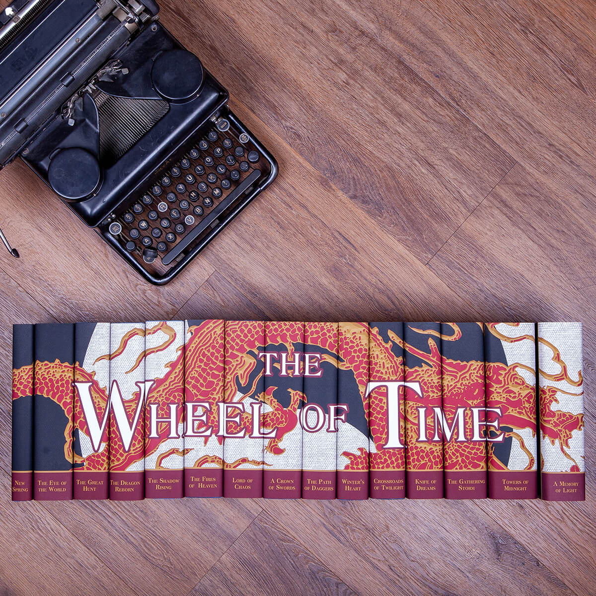

The Wheel of Time is a series of high fantasy novels written by Robert Jordan, later completed by Brandon Sanderson. The series consists of 14 books, along with a prequel novel and two companion books. The story revolves around the struggle between the forces of Light and Shadow, and the cyclical nature of time and history.
